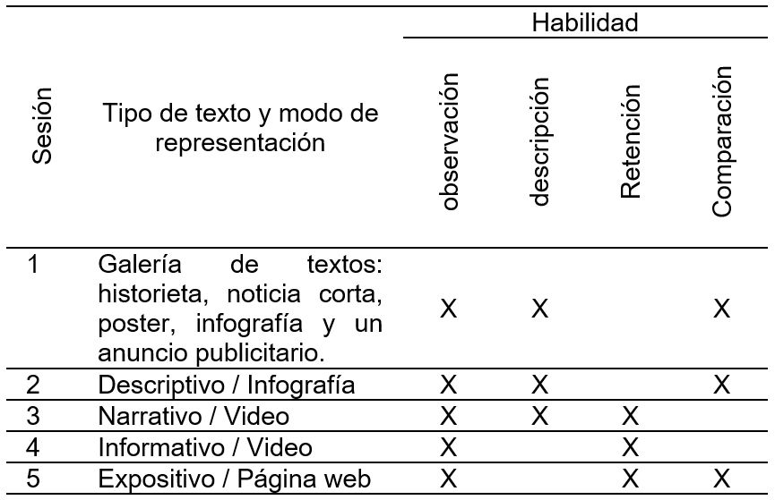
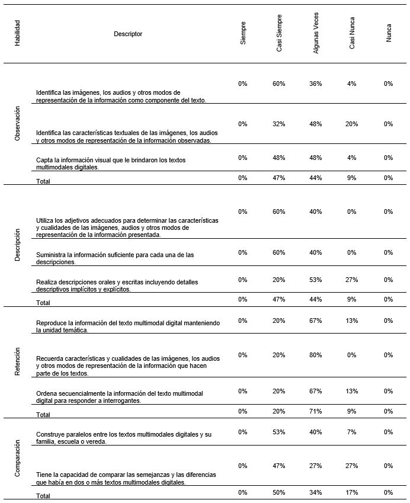
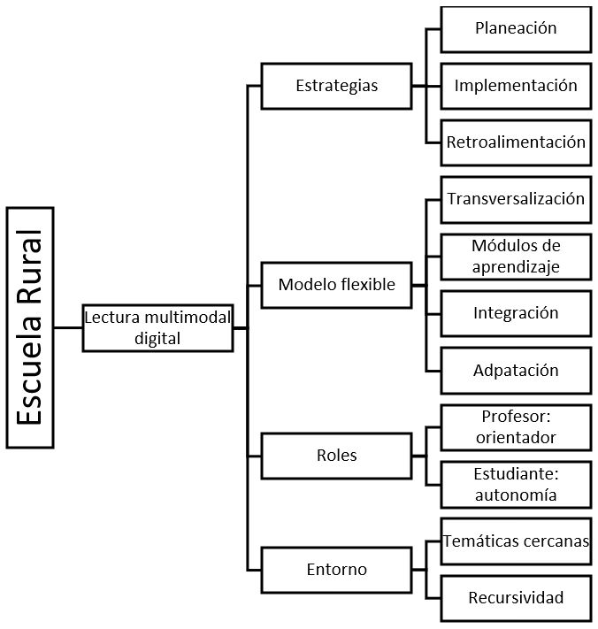

Introducción
La lectura permite a los estudiantes acceder a
la información que circula en diferentes formatos,
medios de comunicación, y en herramientas con
las cuales interactúa en su diario vivir. También,
es una manera para aprender y enriquecer los
saberes conseguidos a lo largo de la vida. Es en este
proceso donde el estudiante desarrolla diferentes
habilidades cognitivas que le permiten explorar,
comprender, analizar y reflexionar sobre diferentes
problemáticas a las cuales se enfrenta. Además, estas
se encuentran interrelacionadas con los procesos de
aprendizaje (Peng & Kievit, 2020) y la transferencia
de conocimientos (Kraft, 2019).
Las habilidades cognitivas, desde el punto
de vista de Ramos-Elizondo, Herrera-Bernal &
Ramírez-Montoya (2010), son destrezas básicas
y superiores para responder a una tarea, donde las
primeras ayudan a la construcción de las segundas.
Para los autores, las habilidades básicas son:
análisis, obtención y recuperación de la información,
enfoque, transformación y evaluación; mientras
las habilidades cognitivas superiores son: toma
de decisiones, pensamiento crítico, pensamiento
creativo y solución de problemas. Asimismo, están
asociadas a procesos exitosos de comprensión de
lectura (Peng & Kievit, 2020; Taboada Barber &
Lutz Klauda, 2020).
Por su parte, Romero Carrasquero & Tapia
Luzardo (2014), plantean que las habilidades
cognitivas favorecen nuevos conocimientos en
situaciones determinadas, al tiempo, que son
un indicador de la salud mental de las personas.
Desde esta perspectiva, el aula de clase, es un
lugar en donde las habilidades cognitivas, a partir
de la ejecución de estrategias didácticas, se pueden
desarrollar o fortalecer. Además, con el uso de las
tecnologías digitales se reconoce la responsabilidad
de la escuela de comprender las formas como operan
las habilidades cognitivas en la comunicación
multimodal (Gladic Miralles & Cautín-Epifani,
2016).
Los textos multimodales digitales son tipos de
textos que combinan diferentes sistemas semióticos,
permitiendo el acceso a la información de manera
diversa y a partir de la comprensión lectora de los
mismos, desarrolla el pensamiento y la adquisición
del conocimiento en los estudiantes. Barboza & Peña
(2014), señalan que las generaciones actuales tienen
el reto de participar y comprender en otras formas
de lectura, que exigen aplicación de estrategias
didácticas para lograr niveles de reflexión y criticidad
sobre el texto.
Anteriormente el acercamiento a la lectura se
realizaba por medio de libros físicos y en lugares
específicos, como las bibliotecas o salones de clase.
A medida que ha ido evolucionando las tecnologías,
las prácticas de lectura se ha ampliado, ya que se
puede acceder a ella de diferentes formatos y
soportes, de allí el concepto de lecturas multimodales
digitales. Al respecto, Calle-Álvarez & Pérez-Gómez
(2018), afirman que la básica primaria es clave
para la formación de la argumentación y que los
textos multimodales digitales son una herramienta
importante para el aprendizaje significativo, ya que
activan diferentes sentidos y canales de comprensión.
Al tiempo, que aportan a los estímulos sensoriales
auditivos y visuales necesarios para la adquisición
y la mejora de la lectura en la infancia (Xu et al.,
2018).
Manghi Haquin et al., (2013), desde una revisión
documental concluyen que, para tener un aprendizaje
significativo, es necesario que el profesor incorpore
en las estrategias de enseñanza textos donde no solo
se tenga en cuenta las grafías, sino también otros
elementos como dibujos, fotografías, mapas. Este tipo
de texto donde ofrecen varios recursos semióticos, se
convierte en elementos para el aprendizaje, ya que el
estudiante requiere desarrollar diversas habilidades
cognitivas para lograr una comprensión.
Gutiérrez Cardoso (2018), plantea que la
utilización de las tecnologías digitales dentro
del aula, le permite al docente transformar la educación y generar en los estudiantes, otras
formas de percibir su realidad, el interés por el tema
investigativo y el trabajo colaborativo e individual.
Además, incorporando en el proceso educativo, la
interpretación de textos multimodales, permiten en
el estudiante realizar conexiones entre la enseñanza,
los métodos de aprendizaje y sus problemas sociales.
Sin embargo, Vásquez Guerrero (2020), considera
que es necesario que inicialmente el profesor
adquiera las competencias para el uso didáctico de
las tecnologías digitales, para poder llevar al aula los
textos multimodales digitales.
Calle-Álvarez & Gómez-Sierra (2020), en
un estudio sobre comportamiento lector de textos
multimodales afirman que la lectura se convirtió para
los estudiantes en una posibilidad para desarrollar la
imaginación, además, que los diferentes espacios en
los cuales interactúa, como la familia y la escuela
son fundamentales para el proceso lector. Por
consiguiente, la escuela debe propiciar momentos
de encuentros con la lectura, a partir de diferentes
tipos de textos para contribuir con la formación de
sujetos autónomos, reflexivos y críticos, teniendo en
cuenta el uso de las diferentes tecnologías, con las
cuales cuenta la institución, para trabajar la variedad
textual.
Neva (2021), realizó una investigación que
consistió en recopilar y analizar una serie de artículos
de investigación referentes a la implementación de
textos multimodales digitales en la escuela primaria
para el mejoramiento de la comprensión lectora. En
las conclusiones se reconoce que la generalidad de
las investigaciones se evidencia una tendencia sobre
la favorabilidad en cuanto a la implementación de
textos multimodales digitales en las aulas de clases.
Por ello, la lectura ya no se ve como una práctica
lineal que solo está en los libros físicos, sino también
como una práctica donde los textos digitales abren el
paso a nuevos formatos hipermediales.
Los estudios sobre habilidades cognitivas
y lectura siguen estando vigentes por sus contribuciones a la discusión sobre el proceso de
adquisición y aprendizaje de la lectura en la vida
social y académica. Además, con la incorporación
de las tecnologías digitales en la escuela, se hace
necesario comprender las transiciones y adaptaciones
didácticas que se deben hacer desde la escuela para
el abordaje de los textos multimodales digitales. Por
ello, el objetivo del artículo es analizar el desarrollo
de las habilidades cognitivas durante la lectura de
texto multimodales digitales en los estudiantes de la
básica primaria de la escuela rural.
Materiales y Métodos
Para desarrollo de la investigación se
implementó la metodología mixta. HernándezSampieri & Mendoza Torres (2018), se refieren a
metodología mixta como un proceso sistemático
que implica el análisis crítico y reflexivo de datos
cuantitativos y cualitativos. Con este método, se
logra la retroalimentación de las características de
los métodos cualitativos y cuantitativos en pro a
la solución del problema de investigación. Con
la metodología cualitativa se tuvo en cuenta al
estudiante desde su contexto y las relaciones con la
lectura de textos multimodales digitales; mientras
que la metodología cuantitativa aportó a la medición
y seguimiento de las habilidades cognitivas.
El enfoque pragmático es el utilizado para
fundamentar la metodología mixta. Este enfoque se
caracteriza por vincular la práctica con la teoría y se
centra en la pregunta de investigación (Pole, 2009).
La ejecución de la investigación se realizó a partir de
las siguientes fases:
Fase 1. Presentación de propuesta investigativa
a la comunidad educativa: durante el segundo
semestre del año 2020, se inició con la elaboración
del proyecto de investigación. Se identificaron
las debilidades que presentaban los estudiantes
referentes al proceso de lectura y las características
del entorno escolar. Además, se realizó la búsqueda
de los referentes teóricos que ayudaron a sustentar
el estudio, construyendo las ideas necesarias para darle solución o para la mejora de las debilidades
identificadas en los estudiantes. De igual manera,
se socializó la propuesta de investigación a la
comunidad educativa.
Fase 2. Diseño de propuesta transversal desde
el modelo Escuela Nueva: esta fase se ejecutó en
los dos primeros meses del primer semestre del
año 2021, se realizó la modificación de algunos
contenidos trabajados en los módulos de aprendizaje
del Modelo Flexible Escuela Nueva, utilizados
dentro del aula de clase para el proceso de enseñanza
y aprendizaje de los estudiantes. Con el diseño de
estas unidades de aprendizaje, se buscó trasversalizar
las competencias que trabajan los estudiantes, con
los textos multimodales digitales.
Fase 3. Diseño y validación de los instrumentos
de investigación: en esta fase se diseñaron
dos instrumentos de investigación la escala de
habilidades cognitivas y el diario de campo.
Además, se solicitó a un magíster en lingüística, con
experiencia investigativa sobre estudios del lenguaje
en la educación que revisara los instrumentos. El
experto sugirió que se eliminarán unos indicadores
de la escala de habilidades cognitivas debido a que
estaban inmersos en los otros, los investigadores
asumieron positivamente las sugerencias. El otro
instrumento lo consideró pertinente para responder
al objetivo de la investigación.
Fase 4. Implementación de la propuesta
transversal y recolección de información: organizada
la propuesta didáctica, se pasó a la ejecución de la
misma. Además, se aplicaron los instrumentos de
investigación.
Fase 5. Análisis de la información: después
de la ejecución de las actividades planeadas, y de
haber recogido la información, se procedió a realizar
el análisis; para ello, se consolidó la información
de la escala de habilidades cognitivas en una tabla
de Microsoft Excel, mientras que para el diario de campo se realizó una lectura y clasificación de la
información en categorías.
Instrumentos de recolección de información
Escala de habilidades cognitivas durante la
lectura de textos multimodales digitales: la escala
es un instrumento de recolección de datos, que le
facilita al investigador medir diferentes variables
dentro de una investigación. La escala medía cuatro
habilidades cognitivas: observación, descripción,
retención y comparación desde la perspectiva de
Romero Carrasquero & Tapia Luzardo (2014), sobre
las habilidades cognitivas en los primeros años
escolares. Estos postulados se materializaron en 11
indicadores. Para la recolección de los datos, uno
de los investigadores diligenciaba el instrumento
después de realizar una actividad de lectura de
textos multimodales digitales, determinando el
nivel de desempeño del indicador en cada uno de
los estudiantes. Posteriormente, la información se
registraba en una tabla de Microsoft Excel, para el
análisis desde la estadística descriptiva. Vale precisar,
que las cuatro habilidades no necesariamente se
evaluaban en todas las sesiones (ver tabla 1).
Diario de campo: fue un instrumento de
recolección de información utilizado por los
investigadores, con el objetivo de registrar aquellas
experiencias de los estudiantes desde la lectura de
textos multimodales digitales. En este instrumento
fue importante la observación sobre el grupo de
estudiantes, sus acciones, actividades, opiniones
dadas frente a las actividades realizadas. El
diario de campo contenía las descripciones de las
observaciones efectuadas durante la intervención
didáctica. Se diligenciaba después de cada sesión.
Para su análisis se utilizó el análisis de contenido,
para lo cual, se realizó una lectura de cada registro y se
categorizaba los fragmentos con valor interpretativo,
desde sus aportes a la comprensión del desempeño
de las habilidades cognitivas durante la lectura de
textos multimodales digitales.
Población y Muestra
El Centro Educativo Rural al momento del
estudio contaba con 12 estudiantes matriculados
en los grados de 1° a 4° de la básica primaria.
Para desarrollar esta investigación, se tomó como
muestra, 5 estudiantes de los grados 3° y 4°. Ellos
fueron 2 mujeres y 3 hombres. Sus edades oscilaban
entre los 8 y 12 años de edad. El contexto en el cual
se desenvuelven, es rural. Estudian bajo el modelo
flexible Escuela Nueva-Escuela Activa. A pesar de
ser del campo y no contar con recursos económicos
suficientes, tenían la posibilidad de interactuar con
la tecnología en la sede educativa y en sus hogares.
Características generales de la intervención didáctica
El Modelo Flexible Escuela Nueva-Escuela
Activa el cual se trabaja en la sede educativa, tiene
como finalidad, que el estudiante construya sus
propios conocimientos. Es un modelo flexible, con un
enfoque constructivista donde la base fundamental
son los saberes previos de los estudiantes, el trabajo
colaborativo y el ritmo de aprendizaje de cada uno.
El profesor asume una postura de orientador del
proceso de aprendizaje, donde además de utilizar los
módulos, incorpora los recursos que brinda el medio
que les rodea y la interacción con la comunidad
educativa. Esta metodología flexible implica que
el proceso de lectura, se transforme en un recurso
para el aprendizaje de los estudiantes. Ellos, utilizan
la lectura en diferentes áreas del conocimiento en
el aula de clases, no solamente de textos escritos,
sino también de imágenes, lugares, sonidos y
comportamientos que suceden en su territorio, y
que son la base para desarrollar sus actividades
académicas.
El diseño de la intervención didáctica consideró
cinco sesiones de lectura de textos multimodales
digitales, y cada sesión se estructuró desde tres
momentos: a) prelectura, exploración de saberes
previos, motivación e introducción de los estudiantes a los aspectos globales del texto; b) lectura,
desarrollo
de la lectura del texto de manera individual o
colectiva; c) confrontación, valoración del avance de
las habilidades cognitivas. En la tabla I, se resume el
tipo de texto abordado y las habilidades cognitivas
valoradas.
Tabla I. Relación textos y habilidades cognitivas

Resultados y Discusión
Los resultados se presentan desde la escala de
habilidades cognitivas durante la lectura de textos
multimodales digitales y el uso didáctico de los
textos multimodales digitales en la escuela rural,
lo que permite ampliar las comprensiones sobre el
proceso de valoración de las habilidades cognitivas,
desde los aportes de la didáctica y la perspectiva de
los estudiantes.
Habilidades cognitivas durante la lectura de textos multimodales digitales
Para el análisis de la fiabilidad, se aplicó el Alfa
de Cronbach para los once indicadores de la escala
de habilidades cognitivas durante la lectura de textos
multimodales digitales, arrojando un resultado de
0,98, que desde los niveles propuestos por Streiner
(2003), es un valor excelente para los estudios en
Ciencias Sociales. Lo anterior es un resultado
positivo para el estudio, debido a la complejidad
para comprender unas características no observables
directamente en los estudiantes de la escuela rural.
Tabla II. Resultados escala de habilidades cognitivas durante la lectura de textos multimodales
digitales

En la Tabla II se presentan el porcentaje de
estudiantes por desempeño de cada una de las
habilidades cognitivas. Como se identifica no hubo
estudiantes que se ubicaran en los niveles de siempre
y nunca, lo que evidencia, por una parte, el poco
contacto de los estudiantes con procesos de lectura
multimodal digital lo que dificultó procesos de
desempeño alto; por otra parte, que las experiencias
previas de lectura aportan a los procesos de lectura
multimodal digital, trasladando las habilidades
cognitivas a las interacciones con los recursos tecnológicos. Esto implica un reto para la escuela
rural de ir incorporando a los estudiantes en la cultura
digital, debido a que actualmente la mayor parte de
la información circula en los espacios virtuales.
Con respecto a la habilidad de la observación,
esta cumplió un papel importante durante la
aplicación y análisis de los resultados de la secuencia
didáctica desarrollada con los estudiantes, ya que
esta fue la única habilidad que estuvo presente en
cada una de las sesiones aplicadas, debido a que era un punto de partida para comprender las otras
habilidades. Lo cual se justifica debido a que es el
inicio para procesos de decodificación y comprensión
lingüística (Grace Kim, 2017). En esta habilidad
cognitiva se evidenció que el 60% de los estudiantes
casi siempre identificaron los componentes de
los textos multimodales digitales, como lo son las
imágenes, los audios y las grafías.
Cuando se trabajó las características textuales
de los textos multimodales digitales, se evidenció
que, un 48% de los estudiantes, se sostuvieron
en la variante a veces con tendencia a mejorar,
ya que el 32% de los estudiantes reconocieron
las características casi siempre. Al momento de
trabajar los textos multimodales digitales a partir
de la observación, los estudiantes identificaron las
características textuales externas como el título,
el autor, la extensión, además, de los recursos
visuales y sonoros. Vale precisar que al comienzo
no reconocían las características gráficas y visuales
como parte del texto, lo que se explica por el poco
uso de textos digitales en sus prácticas de lectura, lo
que implicó una explicación por parte de la profesora
para que en los procesos de observación comenzaran
a reconocer los aportes de estas características a la
comprensión del texto. El lograr estas comprensiones
son importantes porque en los procesos de lectura el
estudiante integra los procesos auditivos y visuales
(Xu et al., 2018).
Frente al componente visual de los textos, les
era más fácil reconocer los elementos presentes
en las imágenes, pero, era necesario orientar los
análisis para que comprendieran los aportes de estas
al contenido del texto. Esta situación reflejaba una
lectura literal de este tipo de textos. Sin embargo,
como lo señala Calle-Álvarez & Gómez-Sierra
(2020), las imágenes implican otras formas de lectura
debido a que es necesario comprender los sistemas
simbólicos que están inmersos en el texto, por lo que
es necesario continuar abordando este tipo de textos
para fortalecer los niveles de lectura inferencial y
crítico.
La descripción es la habilidad cognitiva que le
permite a los estudiantes expresar de forma oral o
escrita las características de un objeto, lugar, persona
o evento. Esta habilidad se relaciona notablemente
con la observación, ya que la descripción elaborada
es el resultado de una observación rigurosa. En la
aplicación de la secuencia didáctica, el resultado
arrojado en esta habilidad cognitiva refleja que el
grupo de estudiantes respondió positivamente a las
actividades donde se involucró la descripción. Como
se evidencia en la Tabla II, el 60% de los estudiantes
se sostuvieron en el nivel de casi siempre en los
indicadores sobre la utilización de los adjetivos
adecuados para determinar las características y
cualidades de las imágenes, audios y otros modos
de representación de la información presentada;
y en el suministro de la información suficiente
para cada una de las descripciones. Esto se reflejó
cuando los estudiantes realizaron la descripción
de imágenes proyectadas en un video sobre un
cuento y en la infografía; para lo cual, utilizaron los
adjetivos adecuados y suministraron información
relevante y amplia que reflejaban las características
de lo observado. El otro 40% de los estudiantes, se
sostuvieron en el nivel de a veces con tendencia
a mejorar, tratando de cumplir con los objetivos
propuestos durante el desarrollo de cada una de las
actividades, debido a que sus descripciones eran
cortas, lo que dificultaba la identificación de la
imagen que deseaban proyectar con sus palabras.
Cuando se trabajó el tercer ítem que hacía
referencia a las descripciones de objetos de forma
oral y escrita donde incluida detalles descriptivos,
se pudo evidenciar que el 53% de los estudiantes se
mantuvieron en un desempeño medio y, además, un
27% en casi nunca. Este resultado se dio ya que, al
momento de describir, los estudiantes se centraban
en lo visible, pero cuando se les pedía describir de
una manera implícita, los estudiantes no lograban
responder. Este último aspecto se evidenció en
una de las actividades donde debían completar
los organizadores gráficos y escribir en tarjetas
las características de imágenes observadas. En
estas actividades consignaron solo la información que podían observar a simple vista, más no
aquellas características que permitían reconocer
aspectos como usabilidad, tiempos, acciones.
Al respecto, Gutiérrez Cardoso (2018), plantea
que las confluencias de las características de los
textos multimodales permiten comprensiones y
reconstrucciones profundas de la realidad.
La retención es la habilidad cognitiva que
le permite al estudiante codificar, almacenar
una información que hayan adquirido, para
posteriormente, desarrollar otras que requieran de
esa clase de información. Al momento de evaluar
la retención en el desarrollo de las actividades
planeadas se evidenció como lo muestra la Tabla
II, que en los tres ítems trabajados el 20% de los
estudiantes obtuvieron desempeños de casi siempre,
lo que indica que el 80% se ubicó en algunas veces
y casi nunca. Con estos resultados arrojados se
refleja que los estudiantes presentaron dificultades
para aplicar la memoria al momento de recordar
las características de estructura y contenido de los
textos multimodales digitales, para aplicarlo en
las actividades de verificación, ya que a pesar de
que se les explicó cuáles eran las características
implícitas y explicitas a tener en cuenta en un
texto, no lo aplicaban correctamente al desarrollar
las otras actividades trabajadas. También, se les
dificultó el trabajo de ordenar la información de
los textos, debido a que omitían información clave.
Como lo plantea Hoyos Flórez & Gallego (2017),
durante la lectura es necesario la comprensión de las
estructuras sintácticas y relaciones semánticas para
la recuperación del mensaje escrito.
Al analizar los resultados de la habilidad
cognitiva de la comparación, en tres de las cinco
sesiones trabajadas, se pudo evidenciar en los ítems
evaluados, que un promedio del 50% de estudiantes se
sostuvieron en la variante casi siempre, lo que indica
que el otro 50% se encuentran en desempeños de
algunas veces y casi nunca. Lo anterior muestra que
la mitad de los estudiantes realizaron comparaciones
entre dos textos multimodales digitales, encontrando
las semejanzas y las diferencias entre ellos a partir de la información que brindaron en cada una de sus
características semánticas, logrando organizar y
relacionar los nuevos conocimientos con los saberes
previos que trajeron a las sesiones de trabajo, lo
que se corresponde con los modelos situacionales
que parten de los conocimientos adquiridos para
lograr comprensiones más profundas de los textos
(Grace Kim, 2017). Sin embargo, a la otra mitad
de los estudiantes se les dificulta encontrar puntos
de encuentro y distancia entre los textos, lo que se
explica debido a que, en el dominio de las habilidades
cognitivas de observación, descripción y retención,
también, tienen dificultades, lo que se torna en un
obstáculo para desarrollar procesos de comparación.
En los estudiantes que obtuvieron un desempeño
de casi siempre, en la habilidad de comparación,
se destaca que realizaron paralelos entre dos tipos
de textos como lo fueron un video con estructura
informativa y un video con contenido narrativo,
donde se referían al mismo tema, pero la información
brindada era diferente. También, en la habilidad
de la comparación se reconoció que los textos
multimodales digitales tuvieron mayor aceptación
que los libros impresos a los cuales los estudiantes
están acostumbrados a leer. Por esta razón como lo
afirma Neva (2021), los profesores pueden hacer uso
de las posibilidades de las tecnologías digitales para
lograr avances en la comprensión de lectura de los
estudiantes.
Los textos multimodales digitales en la escuela rural

Figura 1. Lectura multimodal digital en la escuela rural
La Figura 1 presenta las categorías y
descriptores que emergieron del análisis del diario
de campo. Desde el abordaje didáctico de los
textos multimodales digitales en la escuela rural se
reconoce que, en el proceso de aprendizaje de los
estudiantes, las estrategias de enseñanza utilizadas
por el docente son importantes para que este proceso
sea significativo. Cada una de las acciones que se
realizan en el espacio educativo contribuyen a
enriquecer la experiencia de los estudiantes, a partir
de las necesidades que presentan ellos. Lo anterior,
corresponde con el estudio de Thibaut (2020), sobre
la integración de los modelos de comunicación digital
de las que participan los estudiantes y profesores
fuera del aula, con las prácticas que se desarrollan
dentro del aula.
Desde el mismo momento en que se da
apertura a las clases, con el saludo por parte de la
docente hacia el grupo de estudiantes, donde se
les dio a conocer el tema a trabajar, el objetivo,
las actividades y la metodología a utilizar, se implementaron estrategias de enseñanzas que le
permitieron a los estudiantes la retroalimentación
de sus conocimientos previos. Por otra parte, la
implementación de diferentes recursos didácticos
como los módulos de aprendizaje del Modelo Flexible
Escuela Nueva-Escuela Activa en diferentes áreas
del conocimiento, las tabletas, los computadores, los
rompecabezas, las imágenes impresas y digitales,
los videos, los textos multimodales tanto impresos
como digitales, y los materiales que ofrecía el
medio que rodeaba a los estudiantes, permitieron
el desarrollo de las actividades que fortalecieron en
los niños las habilidades cognitivas. El desarrollo
de estas se pudo evidenciar, por ejemplo, cuando
los estudiantes armaban con sus compañeros los
rompecabezas proyectados desde las Tablet y cuando
reproducían las secuencias de sucesos de una noticia
que fue proyectada. En los procesos de enseñanza
y aprendizaje de la lectura, la motivación para que
los estudiantes participen, expresen sus ideas y se
aproximen a los textos contribuyen a mejorar los
niveles de comprensión (Taboada Barber & Lutz
Klauda, 2020).
Durante el desarrollo de las sesiones fue
importante la actitud de la profesora a cargo del
grupo de estudiantes. Esto se vio reflejado en el
momento en que la docente daba explicaciones y
aclaraciones pertinentes de los temas trabajados,
cuando tenía disposición en colaborarles a los
estudiantes cuando presentaban dificultades en el
desarrollo de determinadas actividades y cuando
tenía claridad en el objetivo que se pretendía alcanzar
con cada una de las sesiones trabajadas. Con lo
anterior, se pudo lograr un proceso evaluativo, donde
los estudiantes a partir de la participación activa en
las tareas, no solamente en la parte oral, a través de
los conversatorios, mesas redondas y respuestas a
preguntas de tipo indagación, literal o inferencial,
sino también, en la parte escrita con la creación de
textos literarios como el cuento, la noticia, las gráficas,
los mapas conceptuales, el juegos y los talleres con
preguntas de tipo literal, inferencial y crítica, se
pudo evidenciar los saberes que ellos tenían sobre
los temas y despejaron dudas que tuvieran a partir de la explicación que daba la profesora acompañante.
Como señala Vásquez Guerrero (2020), los
profesores tienen la tarea de comprender el papel
de la lectura en una sociedad que está permeada por
las tecnologías, además, de reconocer e implementar
estrategias de acompañamiento donde el estudiante
logre comprender el valor de lo multimodal como
recurso semiótico.
Vale resaltar que la reflexión final a la que se
llegó con la implementación de estas sesiones, es
que es necesario adaptar la planeación y el material
de trabajo brindado por el Modelo Flexible Escuela
Nueva – Escuela Activa a espacios y herramientas
digitales que le brinden al estudiante la variedad
textual y así, se vaya incorporando a los estudiantes
a la cultura digital. Al respecto Bautista Villalobos
& Méndez de Cuellar (2015), plantean que la
incorporación de las tecnologías digitales en el aula
complejiza y diversifica la lectura y la escritura
debido los diversos modos de representación.
Las estrategias de aprendizaje son conductas
y actividades aplicadas por los estudiantes, que
trasversalizadas con las metodologías implementadas
por el docente, ayudan a que el conocimiento sea
significativo ya que, se retroalimentarán los saberes
previos a partir de la interacción con el medio que lo
rodea. Esta situación reafirma la importancia de los
procesos de enseñanza y evaluación, planificados y
ejecutados desde la realidad de los estudiantes, en
el perfeccionamiento de las habilidades cognitivas
(Kraft, 2019).
La galería textual donde los estudiantes tuvieron
acercamiento con elementos que permitieron la
lectura de forma física y digital, la resolución de
preguntas a partir de la observación de gráficas y
dibujos, la lectura de textos impresos y digitales y, el
elaborar y completar gráficos y mapas conceptuales
para sintetizar la información brindada por este
tipo de textos, fueron algunas de las actividades
implementadas en los diferentes encuentros que
permitieron reforzar las habilidades cognitivas
como la retención, la observación, la descripción y la comparación, fomentando en el estudiante la
capacidad de organizar, pensar, almacenar y procesar
la información. Por lo tanto, la implementación
de estrategias de aprendizaje que partan de las
realidades de los estudiantes y el acceso a los recursos
beneficia el desarrollo de habilidades cognitivas que
se replicarán en otros espacios de la vida social del
estudiante (Camizán García et al., 2021).
En este proceso formativo fue importante las
diferentes actitudes, emociones y sentimientos que
expresaron de forma espontánea los estudiantes
durante el desarrollo de las tareas de lectura.
Donde expresaron gusto al momento de realizar
las actividades trabajadas, debido a que se sentían
familiarizados con los textos presentados, donde
los temas se relacionaban con problemáticas o
situaciones que ocurrían en su medio. También,
expresaron las dificultades que se presentaron al
desarrollar ciertas actividades como la elaboración
de mapas conceptuales y la comprensión de textos
informativos, ya que los estudiantes no estaban
familiarizados con este tipo de textos, además,
porque sus actividades previas estaban centradas
en la lectura y la producción de textos narrativos y
descriptivos.
En este proceso de aprendizaje, también, fue
importante la interacción entre los estudiantes y
los diferentes tipos de textos, ya fueran impresos o
digitales, evidenciando así que los textos trabajados
como los descriptivos, informativos, narrativos y
explicativos están integrados en los módulos de
aprendizaje del programa Escuela Nueva, desde las
diferentes áreas del currículo escolar que cuentan
con guías de aprendizaje, permitiendo así la
transversalidad al momento de la planeación de clases.
Asimismo, los estudiantes conocieron algunos tipos
de textos multimodales digitales y lograron entender
que cada uno de los elementos que se encuentran
en este tipo de texto tenían un significado. Como
señalan Manghi Haquin et al., (2013) es necesario
actualizar el concepto de alfabetización debido a que
los recursos multimodales han dejado de tener la concepción exclusiva de valor estético, para aportar
a un diálogo entre sus componentes.
Es de importancia resaltar que cuando los
estudiantes tengan contacto con un tipo de texto
multimodal sea de manera digital o impresa,
explicarles sus características y funcionalidades para
que ellos manejen esta información y su comprensión
sea mayor. Teniendo presente que, cada uno de
los espacios en los que interactúa el estudiante
hacen parte del proceso educativo, ya que es allí
donde construye y reconstruye sus conocimientos,
a partir de la relación entre estos espacios, con las
personas y los recursos didácticos que le permiten
construir saberes. Neva (2021), afirma que el nivel
de inmersión de las tecnologías digitales en la
sociedad genera que los sujetos, en los procesos de
intercambio de información, apliquen estrategias de
selección, evaluación y análisis de la información.
La escuela es uno de los espacios donde los
estudiantes pasan la mayor parte del tiempo, pero
este lugar es una pequeña parte de esa comunidad a
la cual pertenecen, ya que ellos, también, interactúan
con sus familias, con sus vecinos y amigos en las
fincas o los caminos que deben recorrer para llegar a
sus casas o a la escuela, o en otro lugar significativo
como la caseta comunal, espacios importantes en
el entorno rural el cual pertenecen los estudiantes.
Este entorno escolar tiene varios factores como su
cultura, la localización, el nivel económico, que
intervienen de una manera directa o indirecta en la
formación académica de los estudiantes. Cada uno de
estos espacios son significativos dentro del proceso
académico y se pudo evidenciar en el momento en
que los estudiantes interactuaron con la noticia,
donde desde sus comprensiones cercanas lograron
deconstruir la información que les presentaba el
video.
Cuando los estudiantes desarrollaban las
diferentes actividades planeadas a partir de la
secuencia didáctica, se pudieron dar cuenta de que
los libros, carteles y textos que brindan diferentes
lecturas, no solamente se encuentran de manera física, sino también de manera digital. El poco acercamiento
que los estudiantes tienen a las tecnologías
digitales, no les ha permitido explorar las diferentes
presentaciones con las que se pueden disfrutar de la
lectura ni tampoco con la variedad textual. De allí
entonces la importancia que, desde la escuela, la
docente brinde espacios de acercamiento a la lectura
no solamente de manera física, sino también, de
manera digital para que los niños puedan enriquecer
su experiencia educativa y así comprender que cada
elemento que hace parte del entorno que interactúa
a diario se puede leer y brindarnos información
necesaria para nuestro aprendizaje. Monsalve et al.,
(2011), enfatiza que llevar al aula las tecnologías
digitales para que transiten con los medios impresos,
desde los primeros grados escolares, permite que
los estudiantes aprendan de una forma dinámica y
que tengan otras comprensiones de la realidad del
mundo.
Conclusiones
A través de la elaboración y el desarrollo
de la secuencia didáctica, donde su contenido y
actividades a realizar, se trasversalizaron con los
temas de los módulos de aprendizaje trabajados
con los estudiantes dentro del aula de clase, se pudo
evidenciar que este material que hace parte del
Modelo Flexible de Escuela Nueva, integra diversos
textos multimodales que le permiten al estudiante
acceder a otro tipo de lectura, permitiéndole
interactuar con diferentes modos de significación y
así enriquecer el proceso lector.
La implementación de las tecnologías digitales
dentro del aula de clase, permite potenciar el proceso
educativo, ya que es atractivo para los estudiantes y
posibilita la atención en el desarrollo de actividades.
Para el acercamiento a los contenidos planteados
por el modelo Flexible de Escuela Nueva, se
realizaron adaptaciones didácticas a los contenidos.
Sin embargo, esto no es directamente proporcional
al desarrollo de las habilidades cognitivas de
observación, retención, descripción y comparación,
debido a que llevar los textos multimodales digitales a la escuela rural, por si solos, no se desarrolla estas
habilidades.
Se reconoce la importancia de desarrollar
la habilidad cognitiva de la observación en los
estudiantes, debido a sus implicaciones en la
aplicación de las habilidades de descripción,
comparación y retención. Al tiempo, que el desarrollo
de la habilidad de descripción aporta elementos para
la construcción de comparaciones. Por lo tanto,
al momento de proponer propuestas didácticas
que desarrollen estas habilidades es necesario
comprender las conexiones que existen entre ellas,
y tratar de integrarlas a procesos de comprensión de
lectura desde los componentes gráficos y visuales de
los textos.
Al trabajar con los estudiantes los textos
multimodales digitales, se les mostró diferentes
formatos y soportes tecnológicos en las que se puede
practicar la lectura. Trabajando este tipo de texto,
los estudiantes evidenciaron que no solo se puede
acceder a la lectura de una manera física, sino también
de manera digital donde no solo las letras presentan
significado, sino que los dibujos, sonidos y colores
aportan a la construcción de significados dentro de los
textos. Además, se identificó que las imágenes en los
textos multimodales digitales aportan al desarrollo
de las habilidades cognitivas de la observación,
descripción, retención y comparación, sin embargo,
es necesario entrenar a los estudiantes en ellas, para
lograr niveles de desempeño superior.
Una de las principales recomendaciones que se
pueden realizar para futuras investigaciones, es la
implementación de la tecnología digital, y en este caso
los textos multimodales digitales en las actividades
académicas, ya que permiten ir incorporando a los
estudiantes de la escuela rural en la cultura digital,
sin desconocer sus realidades, pero, si posibilitando
acceder a información y recursos que les aportarán
a las comprensiones de sus problemáticas cercanas.
Por otra parte, tener en cuenta que el Modelo
Flexible de Escuela Nueva que se maneja en las zonas rurales, no se puede trabajar tal cual como
es entregado por los entes gubernamentales. Es
importante que el docente primero comprenda
la estructura del modelo flexible y conozca la
finalidad de esta metodología, también los temas
y los contenidos a trabajar, realice diferentes
adaptaciones didácticas a partir de las características
de los estudiantes, el contexto en el cual ellos se
desenvuelven, realice una transversalización y en el
proceso reconocer las potencialidades de recursos
tecnológicos con los que cuenta en el centro rural
para fortalecer los aprendizajes.
Referencias
Barboza P., F. D., & Peña G., F. J. (2014). El
problema de la enseñanza de la lectura en
educación primaria. Educere, 18(59),133-142.
Recuperado de https://www.redalyc.org/articulo.oa?id=35631103015
Bautista Villalobos, S., & Méndez de Cuellar, M.
(2015). Prácticas de lectura y escritura mediadas
por las TICS en contextos educativos rurales.
Revista Guillermo De Ockham, 13(1), 97-107.
https://doi.org/10.21500/22563202.1692
Calle-Álvarez, G. Y., & Gómez-Sierra, M. I. (2020).
El comportamiento lector en textos multimodales
digitales en la básica primaria. Panorama,
14(27), 14–34. https://doi.org/10.15765/pnrm.v14i27.1518
Calle-Álvarez, G. Y., & Pérez-Guzmán, J. A. (2018).
La construcción de argumentos multimodales
digitales en la básica primaria. Aletheia, 10(2),
38-55. Recuperado de https://aletheia.cinde.org.co/index.php/ALETHEIA/article/view/497
Camizán García, H. C., Benites Seguín, L. A.,
& Damián Ponte, I. F. (2021). Estrategias de
aprendizaje. TecnoHumanismo, 1(8), 1-20.
https://doi.org/10.53673/th.v1i8.40
Gladic Miralles, J., & Cautín-Epifani, V. (2016). una mirada a los modelos multimodales de
comprensión y aprendizaje a partir del texto.
Literatura y lingüística, (34), 357-380. https://dx.doi.org/10.4067/S0716-58112016000200017
Grace Kim, Y. S. (2017) Why the Simple View
of Reading Is Not Simplistic: Unpacking
Component Skills of Reading Using a Direct
and Indirect Effect Model of Reading (DIER).
Scientific Studies of Reading, 21(4), 310-333.
http://dx.doi.org/10.1080/10888438.2017.1291643
Gutiérrez Cardoso, N. (2018). Textos multimodales y
su apoyo a la creación e interacción en el entorno
educativo. Praxis, Educación Y Pedagogía,
(2), 84–111. https://doi.org/10.25100/praxis_educacion.v0i2.7799
Hernández-Sampieri, R. & Mendoza Torres, C
(2018). Metodología de la investigación. Las
rutas cuantitativa, cualitativa y mixta. Ciudad
de México, México: Editorial Mc Graw Hill
Education.
Hoyos Flórez, A. M., & Gallego, T. M. (2017).
Desarrollo de habilidades de comprensión
lectora en niños y niñas de la básica primaria.
Revista Virtual Universidad Católica del Norte,
51, 223-45. Recuperado de http://revistavirtual.ucn.edu.co/index.php/RevistaUCN/article/view/841/1359
Kraft, M.A. (2019). Teacher Effects on Complex
Cognitive Skills and Social-Emotional
Competencies. Journal of Human Resources
54(1), 1-36. https://www.muse.jhu.edu/article/714319
Manghi Haquin, D., González Torres, D., Echeverría
Urrutia, E., Marín Martínez, C., Rodríguez Vega,
P., & Guajardo Morales, V. (2013). Leer para
aprender a partir de textos multimodales: los
textos escolares como mediadores semióticos.
Revistas de estudio y experiencia en Educación, 12(24), 77-99. Recuperado de http://www.rexe.cl/ojournal/index.php/rexe/article/view/68
Monsalve Upegui, M. E., Franco Velásquez, M. A.,
Monsalve Ríos, M. A., Betancur Trujillo, V. L.,
& Ramírez Salazar, D. A. (2011). Desarrollo
de las habilidades comunicativas en la escuela
nueva. Revista Educación Y Pedagogía, 21(55),
189-210. Recuperado de: https://revistas.udea.edu.co/index.php/revistaeyp/article/view/9766
Neva, O. A. (2021). Textos Digitales y Comprensión
Lectora en Primaria: Una Revisión de Literatura.
Educación Y Ciencia, (25), e12467. https://doi.org/10.19053/0120-7105.eyc.2021.25.e12467
Peng, P., & Kievit, R. A. (2020). The development
of academic achievement and cognitive abilities:
A bidirectional perspective. Child Development
Perspectives, 14(1), 15-20. https://doi.org/10.1111/cdep.12352
Pole, K. (2009). Diseño de metodologías mixtas.
Una revisión de las estrategias para combinar
metodologías cuantitativas y cualitativas.
Renglones, 60, 37-42 Recuperado de http://hdl.handle.net/11117/252
Ramos-Elizondo, A., Herrera-Bernal, J., & RamírezMontoya, M. (2010). Desarrollo de habilidades
cognitivas con aprendizaje móvil: Un estudio
de casos. Comunicar, 34, 201-209. https://doi.org/10.3916/C34-2010-03-20
Romero Carrasquero, Y., & Tapia Luzardo, F. (2014).
Desarrollo de las habilidades cognitivas en niños
de edad escolar. Multiciencias, 14(3),297-303.
Recuperado de https://www.redalyc.org/articulo.oa?id=90432809008
Streiner, D. L. (2003). Starting at the beginning:
an introduction to coefficient alpha and internal
consistency. Journal of personality assessment,
80(1), 99-103. https://doi.org/10.1207/S15327752JPA8001_18
Taboada Barber, A., & Lutz Klauda, S. (2020). How
Reading Motivation and Engagement Enable
Reading Achievement: Policy Implications.
Policy Insights from the Behavioral and
Brain Sciences, 7(1), 27–34. https://doi.org/10.1177/2372732219893385
Thibaut, P. (2020). El nexo entre literacidad y
cultura digital: una mirada docente en Chile.
Revista Electrónica de Investigación Educativa,
22, 1-13. https://doi.org/10.24320/redie.2020.22.e06.2328
Vásquez Guerrero, D. A. (2020). Texto multimodal
digital para el fortalecimiento de las habilidades
lectoras en estudiantes de Básica primaria TunjaBoyacá. Desafíos de la cultura en la escuela
contemporánea, 6(6), 99-12. Recuperado de
http://experiencias.iejuliussieber.edu.co/index.php/Exp-inv/article/view/170
Xu, W., Kolozsvari, O. B., Monto, S. P., &
Hämäläinen, J. A. (2018). Brain responses to
letters and speech sounds and their correlations
with cognitive skills related to reading in
children. Frontiers in human neuroscience, 12,
304. https://doi.org/10.3389/fnhum.2018.00304

 Doctor en Educación,
gerzon.calle@udea.edu.co .
Doctor en Educación,
gerzon.calle@udea.edu.co .  ORCID:
0000-0002-4083-6051.
Universidad de Antioquia, Medellín, Colombia.
ORCID:
0000-0002-4083-6051.
Universidad de Antioquia, Medellín, Colombia.